「現在のpt帯のフローチャート」→「イベント選択」→「枠回り」の順に確認します。各カードはタップで開閉できます。しっかり読んで、ライブ配信ライフを楽しみましょう！
📝 株式会社KIRINZ/KIRINZ公認ライバー
ミクチャ配信
攻略マニュアル
🌟ライバー向けPOPマニュアル🌟
説明今の状態に合わせて必要な章を開く
50,000pt到達フローチャートRoad to 50,000pt / 配信基礎の整備
青のCHECKで現在地を確認 →「はい」は次へ進む →「いいえ」は改善アクションを開く、という診断ルート型にしました。
背景説明
1
CHECK
BGMを流している
はい次のチェックへ
いいえ改善アクションを見る
配信画面左下からBGM機能を活用しよう
2
CHECK
画面を2秒以上見つめて配信できている
はい次のチェックへ
いいえ改善アクションを見る
カメラ目線を意識しよう
自分から話しかける
3
CHECK
自己紹介ができている
はい次のチェックへ
いいえ改善アクションを見る
①名前 ②趣味 ③参加イベを言ってみよう
4
CHECK
自分から話しかけることができている
はい次のチェックへ
いいえ改善アクションを見る
プロフィールを見て、①趣味 ②共通点 ③参加イベから質問してみよう
アイテムリアクション
5
CHECK
声のトーンを1トーン上げてリアクションできている
はい次のチェックへ
いいえ改善アクションを見る
来てくれたお礼を伝えて歓迎しよう
6
CHECK
表情豊かに配信をしよう
はい次のチェックへ
いいえ改善アクションを見る
喜怒哀楽のメリハリをつけよう。口角を上げよう
7
CHECK
次回の配信告知をしてから配信を終えている
はいゴール達成！
いいえ改善アクションを見る
配信終了前に、次回の配信予定・見どころを伝えてから終わろう
150,000pt到達フローチャートRoad to 150,000pt / 目標・枠づくり・ギフティング
青のCHECKで現在地を確認 →「はい」は次へ進む →「いいえ」は改善アクションを開く、という診断ルート型にしました。
目標設定ができる
1
CHECK
目標ptの設定が出来ている
はい次のチェックへ
いいえ改善アクションを見る
配信タイトルに目標を記載しよう。配信内で目標ptを伝えよう
繋がりを増やす / ファンを増やす
2
CHECK
身振り手振りを交えながら話せている
はい次のチェックへ
いいえ改善アクションを見る
顔の近くに手を持ってこよう。アイテムが飛んだら瞬時にジェスチャーをして、小まめに手を叩いて喜びを表現しよう
3
CHECK
1度来てくれたリスナーさんを覚えている
はい次のチェックへ
いいえ改善アクションを見る
メモを取ろう。配信後のスクショを振り返って「来てくれてありがとう」と挨拶しよう
4
CHECK
枠に来てくれた他のリスナーを紹介してあげている
はい次のチェックへ
いいえ改善アクションを見る
来てくれたらプロフィールに飛んで紹介してあげよう
枠づくりができる
5
CHECK
自ら会話を広げることができている
はい次のチェックへ
いいえ改善アクションを見る
「？」で終わる会話をしよう。トークテーマを決めよう
6
CHECK
1対複数での会話ができている
はい次のチェックへ
いいえ改善アクションを見る
他のリスナーさんにも同じ質問をしよう。配信内でゲームをしよう。深掘りされるトークをしよう
7
CHECK
コメント渋滞せず捌くことができている
はい次のチェックへ
いいえ改善アクションを見る
読む順に注意しよう。自分の話をしすぎないように気を付けよう。新規のライバーさんのコメントは必ず拾おう
ギフティングしてもらうことができる
8
CHECK
アイテムに応じてリアクションの使い分けができている
はい次のチェックへ
いいえ改善アクションを見る
アイテムごとの価値を理解しよう。小：手を動かす／中：声や表情を大きくする・ウィンク／大：フレームアウトする
9
CHECK
ガチファンを意識することができている
はい次のチェックへ
いいえ改善アクションを見る
10KL以上は名前を記入して見えるように掲示しよう。ガチファンランクUPはコメントしてあげよう
10
CHECK
プチ企画の実施ができている
はいゴール達成！
いいえ改善アクションを見る
ptを設定して企画を実施しよう。例：BINGO、投票、リトポ連動、ロシアン企画など
500,000pt到達フローチャートRoad to 500,000pt / 応援文化とギフティング設計
青のCHECKで現在地を確認 →「はい」は次へ進む →「いいえ」は改善アクションを開く、という診断ルート型にしました。
枠づくり
1
CHECK
枠内が健全な状態で整い安定している
はい次のチェックへ
いいえ改善アクションを見る
悪質なリスナーや悪意のあるコメントはスルーしよう
2
CHECK
リスナー同士を繋げることができている
はい次のチェックへ
いいえ改善アクションを見る
一番投げているリスナーには歓迎ムードを作ってもらおう。共通点でグルーピングしてあげよう
3
CHECK
コアリスナーをグリップし枠に必要だと思わせることができている
はい次のチェックへ
いいえ改善アクションを見る
リスナーに役割定義をしてあげよう。枠への必要性を伝えてあげよう
4
CHECK
長期企画と短期企画の使い分けができている
はい次のチェックへ
いいえ改善アクションを見る
月・イベント・デイリーで分けて企画を考案しよう。例：ガチファン達成、イベント順位、投票結果連動など
アイテムを使うきっかけ / アイテムUP
5
CHECK
アイテムを要求するタイミングが理解できている
はい次のチェックへ
いいえ改善アクションを見る
①倍率日 ②ゲリラ ③順位が変動した時 ④ランクが変動する時 ⑤最終日終了15分前など
6
CHECK
嫌味のない要求ができている
はい次のチェックへ
いいえ改善アクションを見る
こじつけて投げる意味を作ろう。キャラに合わせて要求しよう。例：明るい→手を組んで祈る／おとなしい→うれし泣き・感謝
ギフティング
7
CHECK
楽しみながらギフティングしてもらうことができている
はい次のチェックへ
いいえ改善アクションを見る
投げてもらう時のテーマソングを設定しよう。〇〇ができたら投げるなどのゲームをしてみよう
8
CHECK
リスナーやptで優劣をつけることができている
はいゴール達成！
いいえ改善アクションを見る
各アイテムごとにリアクションレベルを決めよう。アイテムに応じて雰囲気を変えよう。接し方に変化をつけよう。例：ファンネームを変える、テンションを変える、ニックネームで呼ぶ、言葉遣い・呼び方を変える
イベント選択のススメpt目安ごとの推奨イベント
イベント画像をpt帯別にすべて配置しました。画像名の表示はせず、バナーだけを見せる構成にしています。
STEP1目安：50,000pt
レベル制限のあるイベント、一定ポイント達成でもらえるものイベ etc..
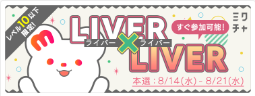
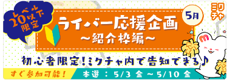
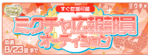
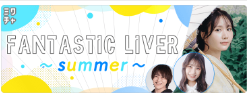
STEP2目安：150,000pt
達成系、ゆるめのものイベ etc..
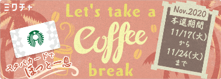
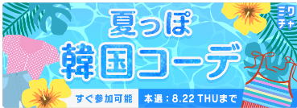
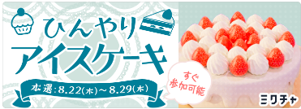
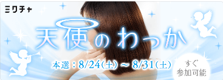
STEP3目安：300,000pt
毎月の定常実施イベントの中でハイレベル、認知度が高くないPRモデルイベント etc…
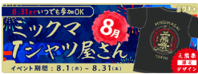
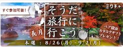
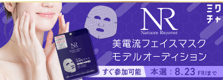
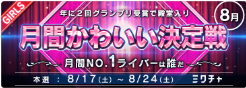
STEP4目安：500,000pt
有名ブランドのPRモデル、1日店長、楽曲提供 etc…
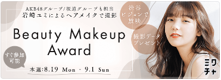
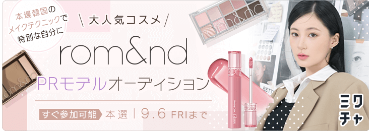
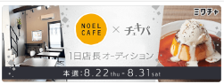
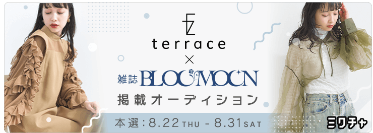
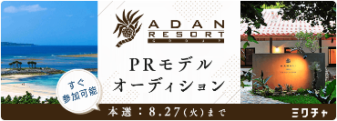
STEP5目安：1,000,000pt以上
ランウェイ、誌面掲載 etc..
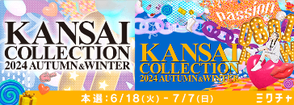
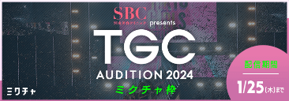
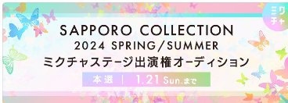
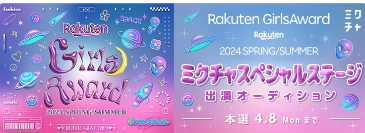
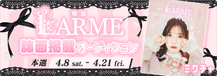
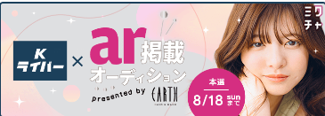
枠回り他枠との関係構築とリスナー導線
枠回りとは？
定義他のライバーさんの配信を見に行くこと。
目的他のライバーと友好的な関係を築く。ほかの枠のリスナーさんに自分を知ってもらい、自分の枠に来てもらう。
重要良い印象を与えることが最も大事。
枠回りのステップ
挨拶「初見です、こんにちは！」「枠の皆さまお邪魔します✨」
コメントとバックコイン共感するコメントや盛り上げるコメントを投稿。例：「○○さん、それめっちゃわかります！」「○○さん、アイテムナイスです✨」
退出時の挨拶例：「この後配信なので、ここで失礼します💦ありがとうございました！！また来ます！」
掲示板への書き込み例：「先ほどは配信お邪魔しました✨TwitterのRTと投票やっておきました👍これからもよろしくお願いします！！」
注意事項
宣伝自分の宣伝は仲良くなってから。
姿勢そのライバーさんに興味を示す姿勢を大切にする。
枠回りのターゲット
行くべき枠同性ライバー、参加コンテスト以外のイベントに参加しているライバー、自分と似たルックス・キャラ・共通点のあるライバー、自分より上位（Top5以内）のライバー、自分の参加コンテストより先に終了するガチイベに参加しているライバー。
ゴールライバーさんではなく、その枠のリスナーさんに来てもらうこと。
実施タイミングとテクニック
いつやるべきか配信を始める1時間前、最低でも30分前。
時間目安1枠につき最低15分。
テクニック最初の3分間楽しく会話し、その後一度コメントを控え、数分後に再登場することで印象を残す。
仲良くなったかどうかの指標
定義Aさんの配信にBさんも、その枠のリスナーさんも参加すること。
循環自分のリスナーさんに紹介して、そのリスナーさんが他の枠に行き、また自分の枠に返ってくる関係が構築できているか。
枠回り先に選ばれた場合と関係維持
枠回り先に選ばれた場合自分がどう見られたいかに基づいて選ぶ。例：新人さんが来たら、機能を教えてあげて実際に投げてもらってみる。
仲良しライバーとの関係維持イベント中に共通リスナーが別のライバーへ多く課金している場合、新規リスナーの獲得を継続することが重要。
リスナーのタイプ別対応
宴会型面白さやノリを重視するリスナーには、面白そうなコメントや企画を提案する。
応援型ライバーと仲良くなり、他のリスナーにも紹介してもらう。